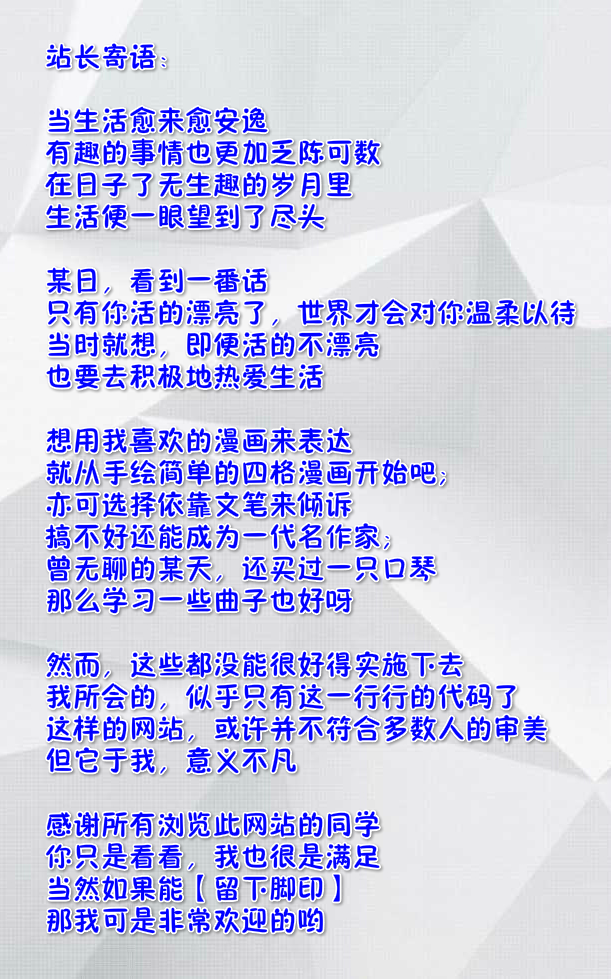

论坛系统
这是我的网站上主要的功能，注册用户可以发表帖子、回复，管理员可以对用户，论坛大模块、小模块、帖子、回复等进行删查操作。 欢迎每一位同学在我的论坛里发表帖子和回复，我每天都会查看回帖，也会时常搜集一些觉得有趣的文章发表出来。希望同学闲着的时候，可以多来看看，说不定就有哪篇文章感动你了呢。
需要注意的是，手机端的论坛系统样式要好看的多，但是发帖回帖不能上传图片，也不能对样式进行修改。而PC端的论坛系统可以实现图片上传和样式修改，只是样子丑了点。那是我最开始的时候做的，以后会再调整。
在线游戏
后来也迷上了数独游戏，排队时打发时间最有效。所以这里会做一个数独游戏，并且提供排行榜功能。
在线工具
目前有“每行文本的首尾增加相同字符工具”、“自定义加密工具”、“每个段落后增加空行工具”三个工具
幸运大转盘
其实只是在首页上增加了一个转盘插件。以前充钱玩游戏的时候就为了点一下转盘，现在总算是看出来了，那做游戏的有多没良心。
历史项目
这里会放我从前开发过的项目，计划整理以下项目：宿舍管理系统、外包项目管理系统、公司后台管理系统（前端框架）、“信天游”APP、jar包小工具（可以下载到本地查看）。但为公司开发的项目，还有不容易展示出的项目，我就不放了，太麻烦了。
自然之声
这里做成一个音乐播放器，但是播放的不是音乐，而是white noise（白噪声）。一张自然的图片，配上自然的声音，可以帮助人更快的入眠。灵感来源也是某white noise的手机APP，好几次失眠就一直听着这个，把耳边的嗡嗡声全赶跑了。做这个目的也是为了推荐更多的人认识到它。
我的视频
发现开源项目里边有好些html5在线视频的，我会直接拿过来加工下使用，毕竟是很好的东西。我也希望以后有值得纪念的视频，也放到自己的网站上。
亲密度调查
这里会放一些关于我的选择题，主打jquery特效。